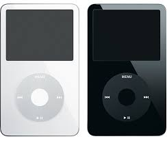

| 
|
|
||||
|---|---|---|---|---|---|
| Capacidad de almacenamiento | 4 GB (1.000 canciones) |
8 GB (2.000 canciones) |
16 GB (4.000 canciones) |
30 GB (7.500 canciones) |
80 GB (20.000 canciones) |
| Colores | |||||
| Pantalla | LCD de 3 cm (diagonal) con retroiluminación |
LCD de 6 cm (diagonal) con retroiluminación |
|||
| Tiempo de carga | Unas 3 horas | Unas 4 horas | |||
| Unas dos horas para alcanzar el 80 % de la capacidad |
|||||